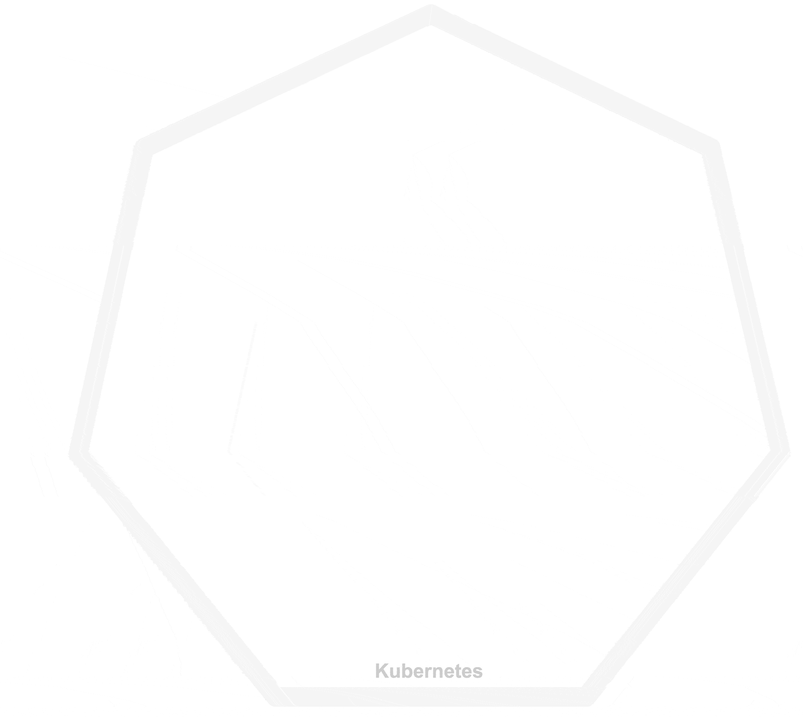
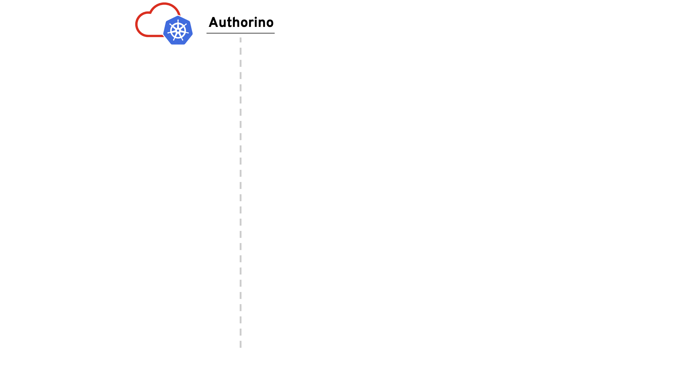

Architecture¶
Overview¶

There are a few concepts to understand Authorino's architecture. The main components are: Authorino, Envoy and the Upstream service to be protected. Envoy proxies requests to the configured virtual host upstream service, first contacting with Authorino to decide on authN/authZ.
The topology can vary from centralized proxy and centralized authorization service, to dedicated sidecars, with the nuances in between. Read more about the topologies in the Topologies section below.
Authorino is deployed using the Authorino Operator, from an Authorino Kubernetes custom resource. Then, from another kind of custom resource, the AuthConfig CRs, each Authorino instance reads and adds to the index the exact rules of authN/authZ to enforce for each protected host ("index reconciliation").
Everything that the AuthConfig reconciler can fetch in reconciliation-time is stored in the index. This is the case of static parameters such as signing keys, authentication secrets and authorization policies from external policy registries.
AuthConfigs can refer to identity providers (IdP) and trusted auth servers whose access tokens will be accepted to authenticate to the protected host. Consumers obtain an authentication token (short-lived access token or long-lived API key) and send those in the requests to the protected service.
When Authorino is triggered by Envoy via the gRPC interface, it starts evaluating the Auth Pipeline, i.e. it applies to the request the parameters to verify the identity and to enforce authorization, as found in the index for the requested host (See host lookup for details).
Apart from static rules, these parameters can include instructions to contact online with external identity verifiers, external sources of metadata and policy decision points (PDPs).
On every request, Authorino's "working memory" is called Authorization JSON, a data structure that holds information about the context (the HTTP request) and objects from each phase of the auth pipeline: i.e., authentication verification (phase i), ad-hoc metadata fetching (phase ii), authorization policy enforcement (phase iii), dynamic response (phase iv), and callbacks (phase v). The evaluators in each of these phases can both read and write from the Authorization JSON for dynamic steps and decisions of authN/authZ.
Topologies¶
Typically, upstream APIs are deployed to the same Kubernetes cluster and namespace where the Envoy proxy and Authorino is running (although not necessarily). Whatever is the case, Envoy must be proxying to the upstream API (see Envoy's HTTP route components and virtual hosts) and pointing to Authorino in the external authorization filter.
This can be achieved with different topologies:
- Envoy can be a centralized gateway with one dedicated instance of Authorino, proxying to one or more upstream services
- Envoy can be deployed as a sidecar of each protected service, but still contacting from a centralized Authorino authorization service
- Both Envoy and Authorino deployed as sidecars of the protected service, restricting all communication between them to localhost
Each topology above induces different measures for security.
Centralized gateway¶
Recommended in the protected services to validate the origin of the traffic. It must have been proxied by Envoy. See Authorino JSON injection for an extra validation option using a shared secret passed in HTTP header.
Centralized authorization service¶
Protected service should only listen on localhost and all traffic can be considered safe.
Sidecars¶
Recommended namespaced instances of Authorino with fine-grained label selectors to avoid unnecessary caching of AuthConfigs.
Apart from that, protected service should only listen on localhost and all traffic can be considered safe.
Cluster-wide vs. Namespaced instances¶
Authorino instances can run in either cluster-wide or namespaced mode.
Namespace-scoped instances only watch resources (AuthConfigs and Secrets) created in a given namespace. This deployment mode does not require admin privileges over the Kubernetes cluster to deploy the instance of the service (given Authorino's CRDs have been installed beforehand, such as when Authorino is installed using the Authorino Operator).
Cluster-wide deployment mode, in contraposition, deploys instances of Authorino that watch resources across the entire cluster, consolidating all resources into a multi-namespace index of auth configs. Admin privileges over the Kubernetes cluster is required to deploy Authorino in cluster-wide mode.
Be careful to avoid superposition when combining multiple Authorino instances and instance modes in the same Kubernetes cluster. Apart from caching unnecessary auth config data in the instances depending on your routing settings, the leaders of each instance (set of replicas) may compete for updating the status of the custom resources that are reconciled. See Resource reconciliation and status update for more information.
If necessary, use label selectors to narrow down the space of resources watched and reconciled by each Authorino instance. Check out the Sharding section below for details.
The Authorino AuthConfig Custom Resource Definition (CRD)¶
The desired protection for a service is declaratively stated by applying an AuthConfig Custom Resource to the Kubernetes cluster running Authorino.
An AuthConfig resource typically looks like the following:
apiVersion: authorino.kuadrant.io/v1beta3
kind: AuthConfig
metadata:
name: my-api-protection
spec:
# The list of public host names of the services protected by this AuthConfig resource.
# Authorino uses the host name provided in the payload of external authorization request to lookup for the corresponding AuthConfig to enforce.
# Hostname collisions are prevented by rejecting to index a hostname already taken by another AuthConfig.
# Format: hostname[:port]
hosts:
- my-api.io:443 # north-south traffic
- my-api.ns.svc.cluster.local # east-west traffic
# Set of stored named patterns to be reused in conditions and pattern-matching authorization rules
patterns: {"name" → {selector, operator, value}, …}
# Top-level conditions for the AuthConfig to be enforced.
# If omitted, the AuthConfig will be enforced at all requests.
# If present, all conditions must match for the AuthConfig to be enforced; otherwise, Authorino skips the AuthConfig and returns to the auth request with status OK.
when: [{selector, operator, value | named pattern ref}, …]
# List of one or more trusted sources of identity:
# - Configurations to verify JSON Web Tokens (JWTs) issued by an OpenID Connect (OIDC) server
# - Endpoints for OAuth 2.0 token introspection
# - Attributes for the Kubernetes `TokenReview` API
# - Label selectors for API keys (stored in Kubernetes `Secret`s)
# - Label selectors trusted x509 issuer certificates (stored in Kubernetes `Secret`s)
# - Selectors for plain identity objects supplied in the payload of the authorization request
# - Anonymous access configs
authentication: {"name" → {…}, …}
# List of sources of external metadata for the authorization (optional):
# - Endpoints for HTTP GET or GET-by-POST requests
# - OIDC UserInfo endpoints (associated with an OIDC token issuer specified in the authentication configs)
# - User-Managed Access (UMA) resource registries
metadata: {"name" → {…}, …}
# List of authorization policies to be enforced (optional):
# - Pattern-matching rules (e.g. `context.request.http.path eq '/pets'`)
# - Open Policy Agent (OPA) inline or external Rego policies
# - Attributes for the Kubernetes `SubjectAccessReview` API
# – Attributes for authorization with an external SpiceDB server
authorization: {"name" → {…}, …}
# Customization to the response to the external authorization request (optional)
response:
# List of dynamic response elements into the request on success authoization (optional):
# - Plain text
# - JSON objects
# - Festival Wristbands (signed JWTs issued by Authorino)
success:
# List of HTTP headers to inject into the request post-authorization (optional):
headers: {"name" → {…}, …}
# List of Envoy Dynamic Metadata to inject into the request post-authorization (optional):
dynamicMetadata: {"name" → {…}, …}
# Custom HTTP status code, message and headers to replace the default `401 Unauthorized` response (optional)
unauthenticated:
code: 302
message: Redirecting to login
headers:
"Location":
value: https://my-app.io/login
# Custom HTTP status code, message and headers to replace the default `and `403 Forbidden` response (optional)
unauthorized: {code, message, headers, body}
# List of callback targets:
# - Endpoints for HTTP requests
callbacks: {"name" → {…}, …}
Check out the OAS of the AuthConfig CRD for a formal specification of the options for authentication verification, external metadata fetching, authorization policies, and dynamic response, as well as any other host protection capability implemented by Authorino.
You can also read the specification from the CLI using the kubectl explain command. The Authorino CRD is required to have been installed in Kubernetes cluster. E.g. kubectl explain authconfigs.spec.authentication.overrides.
A complete description of supported features and corresponding configuration options within an AuthConfig CR can be found in the Features page.
More concrete examples of AuthConfigs for specific use-cases can be found in the User guides.
Resource reconciliation and status update¶
The instances of the Authorino authorization service workload, following the Operator pattern, watch events related to the AuthConfig custom resources, to build and reconcile an in-memory index of configs. Whenever a replica receives traffic for authorization request, it looks up in the index of AuthConfigs and then triggers the "Auth Pipeline", i.e. enforces the associated auth spec onto the request.
An instance can be a single authorization service workload or a set of replicas. All replicas watch and reconcile the same set of resources that match the --auth-config-label-selector and --secret-label-selector configuration options. (See both Cluster-wide vs. Namespaced instances and Sharding, for details about defining the reconciliation space of Authorino instances.)
The above means that all replicas of an Authorino instance should be able to receive traffic for authorization requests.
Among the multiple replicas of an instance, Authorino elects one replica to be leader. The leader is responsible for updating the status of reconciled AuthConfigs. If the leader eventually becomes unavailable, the instance will automatically elect another replica take its place as the new leader.
The status of an AuthConfig tells whether the resource is "ready" (i.e. indexed). It also includes summary information regarding the numbers of authentication configs, metadata configs, authorization configs and response configs within the spec, as well as whether Festival Wristband tokens are being issued by the Authorino instance as by spec.
Apart from watching events related to AuthConfig custom resources, Authorino also watches events related to Kubernetes Secrets, as part of Authorino's API key authentication feature. Secret resources that store API keys are linked to their corresponding AuthConfigs in the index. Whenever the Authorino instance detects a change in the set of API key Secrets linked to an AuthConfigs, the instance reconciles the index.
Authorino only watches events related to Secrets whose metadata.labels match the label selector --secret-label-selector of the Authorino instance. The default values of the label selector for Kubernetes Secrets representing Authorino API keys is authorino.kuadrant.io/managed-by=authorino.
The "Auth Pipeline" (aka: enforcing protection in request-time)¶

In each request to the protected API, Authorino triggers the so-called "Auth Pipeline", a set of configured evaluators that are organized in a 5-phase pipeline:
- (i) Authentication phase: at least one source of identity (i.e., one authentication config) must resolve the supplied credential in the request into a valid identity or Authorino will otherwise reject the request as unauthenticated (401 HTTP response status).
- (ii) Metadata phase: optional fetching of additional data from external sources, to add up to context and identity information, and used in authorization policies, dynamic responses and callback requests (phases iii to v).
- (iii) Authorization phase: all unskipped policies must evaluate to a positive result ("authorized"), or Authorino will otherwise reject the request as unauthorized (403 HTTP response code).
- (iv) Response phase – Authorino builds all user-defined response items (dynamic JSON objects and/or Festival Wristband OIDC tokens), which are supplied back to the external authorization client within added HTTP headers or as Envoy Dynamic Metadata
- (v) Callbacks phase – Authorino sends callbacks to specified HTTP endpoints.
Each phase is sequential to the other, from (i) to (v), while the evaluators within each phase are triggered concurrently or as prioritized. The Authentication phase (i) is the only one required to list at least one evaluator (i.e. 1+ authentication configs); Metadata, Authorization and Response phases can have any number of evaluators (including zero, and even be omitted in this case).
Host lookup¶
Authorino reads the request host from Attributes.Http.Host of Envoy's CheckRequest type, and uses it as key to lookup in the index of AuthConfigs, matched against spec.hosts.
Alternatively to Attributes.Http.Host, a host entry can be supplied in the Attributes.ContextExtensions map of the external authorino request. This will take precedence before the host attribute of the HTTP request.
The host context extension is useful to support use cases such as of path prefix-based lookup and wildcard subdomains lookup with lookup strongly dictated by the external authorization client (e.g. Envoy), which often knows about routing and the expected AuthConfig to enforce beyond what Authorino can infer strictly based on the host name.
Wildcards can also be used in the host names specified in the AuthConfig, resolved by Authorino. E.g. if *.pets.com is in spec.hosts, Authorino will match the concrete host names dogs.pets.com, cats.pets.com, etc. In case, of multiple possible matches, Authorino will try the longest match first (in terms of host name labels) and fall back to the closest wildcard upwards in the domain tree (if any).
When more than one host name is specified in the AuthConfig, all of them can be used as key, i.e. all of them can be requested in the authorization request and will be mapped to the same config.
Example. Host lookup with wildcards.
The domain tree above induces the following relation:
foo.nip.io→authconfig-1(matches*.io)talker-api.nip.io→authconfig-2(matchestalker-api.nip.io)dogs.pets.com→authconfig-2(matches*.pets.com)api.acme.com→authconfig-3(matchesapi.acme.com)www.acme.com→authconfig-4(matches*.acme.com)foo.org→404 Not found
The host can include the port number (i.e. hostname:port) or it can be just the name of the host name. Authorino will first try finding in the index a config associated to hostname:port, as supplied in the authorization request; if the index misses an entry for hostname:port, Authorino will then remove the :port suffix and repeat the lookup using just hostname as key. This provides implicit support for multiple port numbers for a same host without having to list all combinations in the AuthConfig.
Avoiding host name collision¶
Authorino tries to prevent host name collision between AuthConfigs by rejecting to link in the index any AuthConfig and host name if the host name is already linked to a different AuthConfig in the index. This was intentionally designed to prevent users from superseding each other's AuthConfigs, partially or fully, by just picking the same host names or overlapping host names as others.
When wildcards are involved, a host name that matches a host wildcard already linked in the index to another AuthConfig will be considered taken, and therefore the newest AuthConfig will be rejected to be linked to that host.
This behavior can be disabled to allow AuthConfigs to partially supersede each others' host names (limited to strict host subsets), by supplying the --allow-superseding-host-subsets command-line flag when running the Authorino instance.
The Authorization JSON¶
On every Auth Pipeline, Authorino builds the Authorization JSON, a "working-memory" data structure composed of context (information about the request, as supplied by the Envoy proxy to Authorino) and auth (objects resolved in phases (i) to (v) of the pipeline). The evaluators of each phase can read from the Authorization JSON and implement dynamic properties and decisions based on its values.
At phase (iii), the authorization evaluators count on an Authorization JSON payload that looks like the following:
// The authorization JSON combined along Authorino's auth pipeline for each request
{
"context": { // the input from the proxy
"origin": {…},
"request": {
"http": {
"method": "…",
"headers": {…},
"path": "/…",
"host": "…",
…
}
}
},
"auth": {
"identity": {
// the identity resolved, from the supplied credentials, by one of the evaluators of phase (i)
},
"metadata": {
// each metadata object/collection resolved by the evaluators of phase (ii), by name of the evaluator
}
}
}
The policies evaluated can use any data from the authorization JSON to define authorization rules.
After phase (iii), Authorino appends to the authorization JSON the results of this phase as well, and the payload available for phase (iv) becomes:
// The authorization JSON combined along Authorino's auth pipeline for each request
{
"context": { // the input from the proxy
"origin": {…},
"request": {
"http": {
"method": "…",
"headers": {…},
"path": "/…",
"host": "…",
…
}
}
},
"auth": {
"identity": {
// the identity resolved, from the supplied credentials, by one of the evaluators of phase (i)
},
"metadata": {
// each metadata object/collection resolved by the evaluators of phase (ii), by name of the evaluator
},
"authorization": {
// each authorization policy result resolved by the evaluators of phase (iii), by name of the evaluator
}
}
}
Festival Wristbands and Dynamic JSON responses can include dynamic values (custom claims/properties) fetched from the authorization JSON. These can be returned to the external authorization client in added HTTP headers or as Envoy Well Known Dynamic Metadata. Check out Custom response features for details.
For information about reading and fetching data from the Authorization JSON (syntax, functions, etc), check out Common Expression Language (CEL).
Raw HTTP Authorization interface¶
Besides providing the gRPC authorization interface – that implements the Envoy gRPC authorization server –, Authorino also provides another interface for raw HTTP authorization. This second interface responds to GET and POST HTTP requests sent to :5001/check, and is suitable for other forms of integration, such as:
- using Authorino as Kubernetes ValidatingWebhook service (example);
- other HTTP proxies and API gateways;
- old versions of Envoy incompatible with the latest version of gRPC external authorization protocol (Authorino is based on v3.19.1 of Envoy external authorization API)
In the raw HTTP interface, the host used to lookup for an AuthConfig must be supplied in the Host HTTP header of the request. Other attributes of the HTTP request are also passed in the context to evaluate the AuthConfig, including the body of the request.
Caching¶
OpenID Connect and User-Managed Access configs¶
OpenID Connect and User-Managed Access configurations, discovered usually at reconciliation-time from well-known discovery endpoints.
Cached individual OpenID Connect configurations discovered by Authorino can be configured to be auto-refreshed, by setting the corresponding spec.authentication.jwt.ttl field in the AuthConfig (given in seconds, default: 0 – i.e. no cache update).
JSON Web Keys (JWKs) and JSON Web Key Sets (JWKS)¶
JSON signature verification certificates linked by discovered OpenID Connect configurations, fetched usually at reconciliation-time.
Revoked access tokens¶
| Not implemented - In analysis (#19) |
Caching of access tokens identified and or notified as revoked prior to expiration.
External metadata¶
| Not implemented - Planned (#21) |
Caching of resource data obtained in previous requests.
Compiled Rego policies¶
Performed automatically by Authorino at reconciliation-time for the authorization policies based on the built-in OPA module.
Precompiled and cached individual Rego policies originally pulled by Authorino from external registries can be configured to be auto-refreshed, by setting the corresponding spec.authorization.opa.externalRegistry.ttl field in the AuthConfig (given in seconds, default: 0 – i.e. no cache update).
Repeated requests¶
| Not implemented - In analysis (#20) |
For consecutive requests performed, within a given period of time, by a same user that request for a same resource, such that the result of the auth pipeline can be proven that would not change.
Sharding¶
By default, Authorino instances will watch AuthConfig CRs in the entire space (namespace or entire cluster; see Cluster-wide vs. Namespaced instances for details). To support combining multiple Authorino instances and instance modes in the same Kubernetes cluster, and yet avoiding superposition between the instances (i.e. multiple instances reconciling the same AuthConfigs), Authorino offers support for data sharding, i.e. to horizontally narrow down the space of reconciliation of an Authorino instance to a subset of that space.
The benefits of limiting the space of reconciliation of an Authorino instance include avoiding unnecessary caching and workload in instances that do not receive corresponding traffic (according to your routing settings) and preventing leaders of multiple instances (sets of replicas) to compete on resource status updates (see Resource reconciliation and status update for details).
Use-cases for sharding of AuthConfigs:
- Horizontal load balancing of traffic of authorization requests
- Supporting for managed centralized instances of Authorino to API owners who create and maintain their own
AuthConfigs within their own user namespaces.
Authorino's custom controllers filter the AuthConfig-related events to be reconciled using Kubernetes label selectors, defined for the Authorino instance via --auth-config-label-selector command-line flag. By default, --auth-config-label-selector is empty, meaning all AuthConfigs in the space are watched; this variable can be set to any value parseable as a valid label selector, causing Authorino to then watch only events of AuthConfigs whose metadata.labels match the selector.
The following are all valid examples of AuthConfig label selector filters:
--auth-config-label-selector="authorino.kuadrant.io/managed-by=authorino"
--auth-config-label-selector="authorino.kuadrant.io/managed-by=authorino,other-label=other-value"
--auth-config-label-selector="authorino.kuadrant.io/managed-by in (authorino,kuadrant)"
--auth-config-label-selector="authorino.kuadrant.io/managed-by!=authorino-v0.4"
--auth-config-label-selector="!disabled"
RBAC¶
The table below describes the roles and role bindings defined by the Authorino service:
| Role | Kind | Scope(*) | Description | Permissions |
|---|---|---|---|---|
authorino-manager-role |
ClusterRole |
C/N | Role of the Authorino manager service | Watch and reconcile AuthConfigs and Secrets |
authorino-manager-k8s-auth-role |
ClusterRole |
C/N | Role for the Kubernetes auth features | Create TokenReviews and SubjectAccessReviews (Kubernetes auth) |
authorino-leader-election-role |
Role |
N | Leader election role | Create/update the ConfigMap used to coordinate which replica of Authorino is the leader |
authorino-authconfig-editor-role |
ClusterRole |
- | AuthConfig editor |
R/W AuthConfigs; Read AuthConfig/status |
authorino-authconfig-viewer-role |
ClusterRole |
- | AuthConfig viewer |
Read AuthConfigs and AuthConfig/status |
authorino-proxy-role |
ClusterRole |
C/N | Kube-rbac-proxy-role (sidecar)'s role | Create TokenReviews and SubjectAccessReviews to check permissions to the /metrics endpoint |
authorino-metrics-reader |
ClusterRole |
- | Metrics reader | GET /metrics |
(*) C - Cluster-wide | N - Authorino namespace | C/N - Cluster-wide or Authorino namespace (depending on the deployment mode).
Observability¶
Please refer to the Observability user guide for info on Prometheus metrics exported by Authorino, readiness probe, logging, tracing, etc.